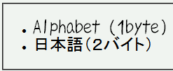

UnicodeやUTF-8で記述した文書では、OpenTypeフォントで2バイト文字を表示することができない。
<ul style="font-family:みかちゃん,sans-serif; font-size:150%;"> <li>Alphabet (1byte)</li> <li>日本語（２バイト）</li> </ul>
この例はOpenType版のみかちゃんフォントをインストールしている環境を想定しています。
Opera7.21での表示（標準モード）
WinIE6.0での表示（標準モード）
UnicodeやUTF-8以外のコード（Shift_JISなど）で記述した文書でこの不具合は発生しません。また、文書の文字コードに関わらずTrueTypeフォントでこの不具合は発生しません。
この不具合については、以下の文書も参照してください。
WinIE6.0標準モード、WinIE6.0互換モードで不具合の発生を確認しました。